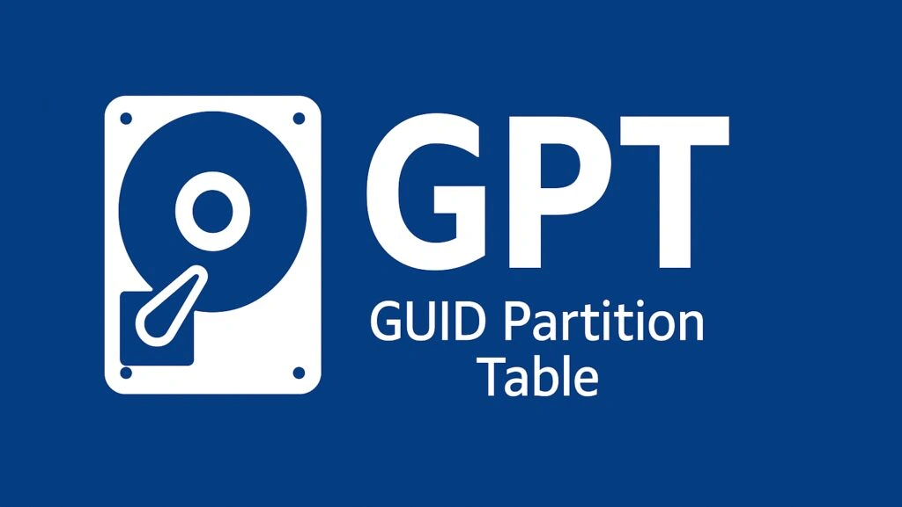
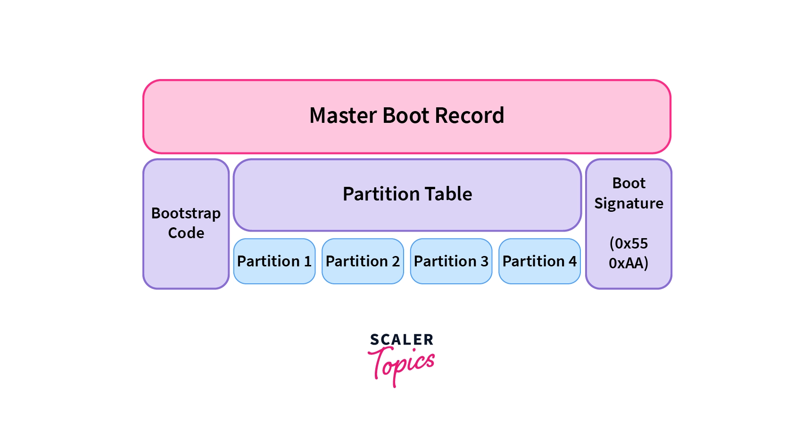
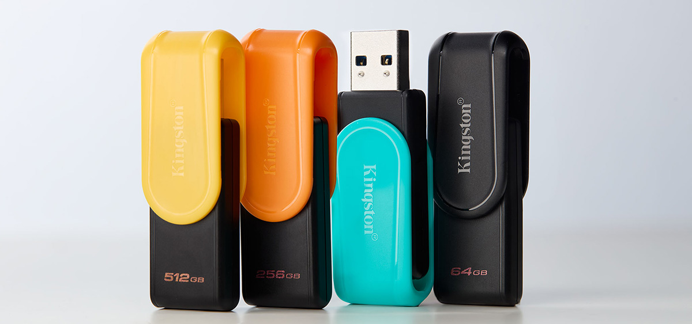
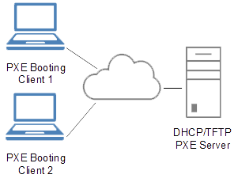
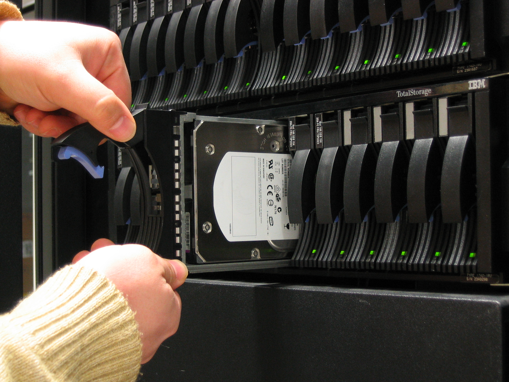
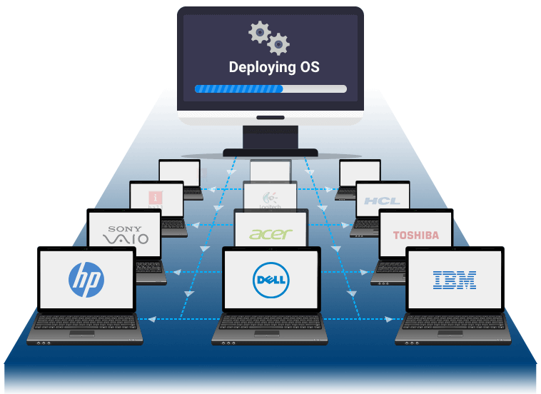
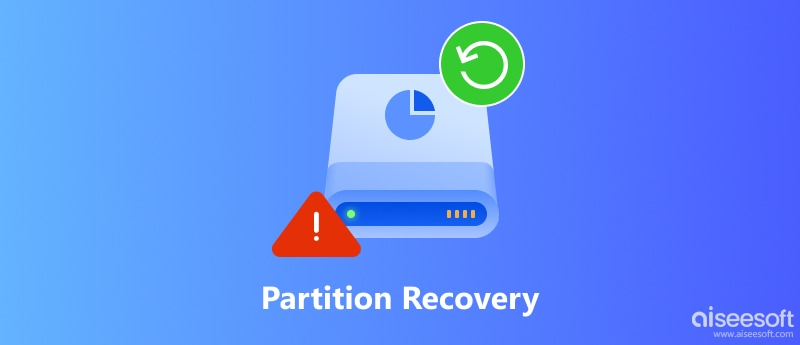
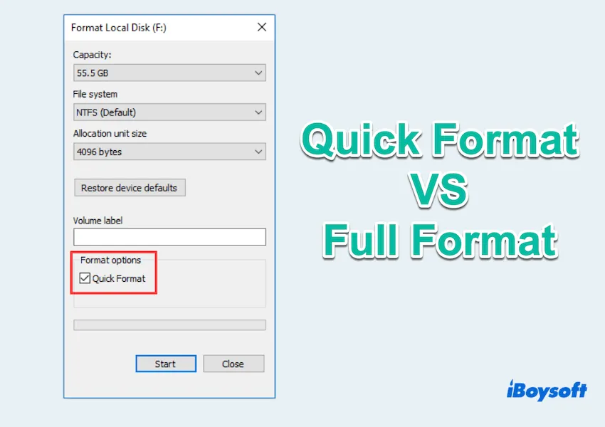
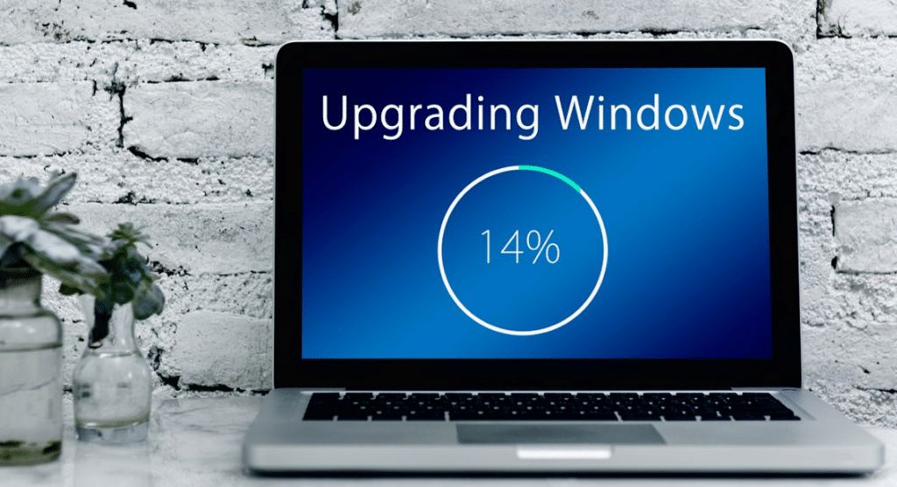
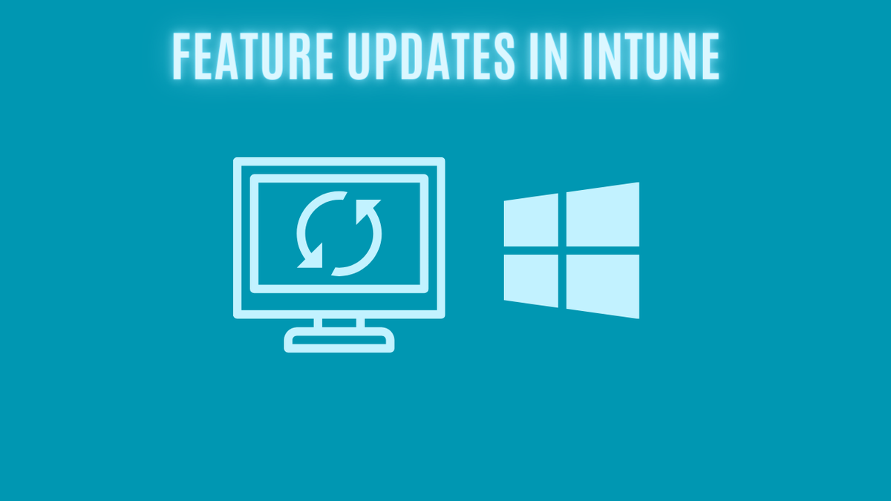

GUID
Globally Unique Identifier — a 128-bit value used to uniquely identify partitions, disks, and other objects in modern systems.
1.2
How systems start up, how operating systems get installed, and how drives are prepared.
How a drive is divided before an OS is installed — and the modern standard most new PCs use.
Globally Unique Identifier — a 128-bit value used to uniquely identify partitions, disks, and other objects in modern systems.

The latest partition format standard. Requires a UEFI BIOS.

Maximum partition size of 2 TB. Maximum of four primary partitions per storage drive. One primary partition can be marked as Active (bootable).
Bootable partitions. Up to four per drive.
One optional extended partition per device holds additional logical partitions — but logical partitions inside an extended partition are not bootable.

First step when preparing disks. The drive may already be partitioned; existing partitions may not always be compatible with your new OS.
.png)
Separate the physical drive into logical pieces. Useful to keep data separated; multiple partitions are not always necessary.
Formatted partitions are called volumes — Microsoft’s nomenclature. Applies across Windows, Linux, and other OSes.
Distinct sources and protocols a computer’s firmware uses to locate and load an operating system into memory during startup.

The USB device must be bootable. The computer must support booting from USB.

Perform a remote network installation. The computer must support booting with PXE.
Store many OS installation files. Often used as the target drive or as installation media depending on the deployment method.
Boot or install across the internet. Examples include Linux distributions, macOS Recovery installation, and Windows updates.

Some external drives can mount an ISO image (optical drive image). Can also boot from USB.
Install and boot from separate drives, or create and boot from a new partition on an existing internal drive.
Pick from two or more operating systems from a boot menu — Windows, Linux, etc.
How installation files are placed on the system — from a full wipe to fully automated enterprise deployment.

Wipe the slate clean and reinstall. A migration tool can help move data afterward.
Maintain existing applications and data while moving to a newer OS version.

Deploy a clone on every computer. Relatively quick and can be completely automated.

Install from a local server or shared drive — or across the internet.

An automatic install with streamlined implementation. Customize the installation process and automate the entire workflow.

Hidden partition with installation files used to restore or reinstall the OS without external media.

Fix problems with the Windows OS. Does not modify user files.
Drive preparation, third-party drivers, and the difference between quick and full formats.

Load alternate third-party drivers when necessary — disk controller drivers, storage drivers, etc.

Creates a new file table. Looks like data is erased, but it is not. No additional checks.
Quick format is the default during installation in Windows 10 and 11. Use diskpart for a full format.

Determining whether a target drive already contains data, has been formatted, or requires partition setup prior to OS installation.
What to verify before wiping a drive or upgrading an existing system.

Preserving important files, personal documents, and user preferences prior to installation or drive wiping.

Verifying that current applications, documents, and system settings will remain supported and functional when updating the OS.

Checking that hardware meets minimum system specifications (memory, disk space) and required hardware security capabilities, such as TPM 2.0 and UEFI Secure Boot.
Support timelines, how updates are delivered, and what moves between operating systems.

Vendor-specific limitations. Different companies set their own EOL policies for when a product stops receiving updates and support.

iOS, Android, and Windows check and prompt for updates. Chrome OS will update automatically.

Some movies and music can be shared. However, there is no direct application compatibility. Fortunately, many apps have been built to run on different OSes.
Some data files can be moved across systems. Web-based apps have strong potential for cross-platform use.
How Microsoft delivers new capabilities and how long an OS version stays supported.

Annual operating system releases that introduce new capabilities, UI features, and system updates.
The period post-release — typically 18 to 36 months depending on the Windows edition — during which an OS version receives security patches and support under the Modern Lifecycle Policy.